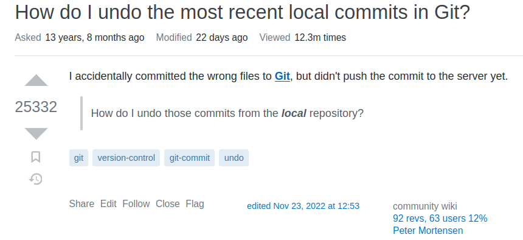

5 Rescuing the repo
While git and GitHub are fairly easy to use when you do things correctly, make a mistake and you can end up in a pickle. But you won’t be the first person to make that mistake. Thousands of people have probably made the same mistake before, and solutions will be available on stackoverflow.
In this section of the tutorial, we will cause problems with increasing severity in our repo and then fix them.
5.1 Reverting uncommited changes
Imagine you have just edited the most important file in your repo and accidentally pressed save. You realised immediately, now you need to revert this change.
Open the git window and select the file you want to revert (you don’t need to tick the staged box), then click the “Revert” button.
NoteExercise
Save an edit to your favourite file (or delete it), then revert this change to restore the original file.
5.2 Undoing the last commit(s)
Sometimes you commit something by mistake. Maybe you committed some edits to the wrong branch.
Fortunately it is easy to undo the last commit if you have not pushed to GitHub.
We need to work in the terminal.
To undo the last commit you can run
git reset HEAD~1Any edits you made will remain, and can either be committed or reverted.
If you wanted to undo the last two commits, you would use HEAD~2 instead of HEAD~1 (this would be equivalent to running git reset HEAD~1 twice).
WarningDestroying a commit
If you want to destroy the last commit and any uncommitted work, you can run
git reset --hard HEAD~1This is often a bad idea. If you are going to do any potentially destructive git surgery, make a backup of the repo first.
NoteExercise
Save an edit to your favourite file (or delete it), and commit the change. Reset this change to restore the original file.
ImportantTime travel is dangerous!
Changing the history of work that is only in your local repo (i.e. work you have not yet pushed to GitHub) with, for example, git reset or git rebase, can be dangerous, so take care.
Changing the history of work that has been pushed to GitHub can make a real mess for your collaborators as their version of history will differ from yours. So avoid using git reset, git rebase or other history-changing commands on work that has been pushed if others are working on the same branch.
5.3 Removing any commit
Sometimes you don’t want to undo the last commit, but one from far back in the history of the repo.
The safest solution is git revert which will make a commit that reverses the commit we want to remove. We need to identify the commits we want to remove. If they are recent, we can use HEAD~3 notation, but for older commits it is probably easier to use the SHA codes for each commit (the SHA hash codes are 40 characters long, but we only need the first few provided they are unique). You can find these in the git history tab.
gitGraph commit id: "A" tag: "5f5e100" commit id: "B" tag: "4d70467" commit id: "C" tag: "ee6b605"
If in the repo in Figure 5.2 we want to revert the commit with a commit message “B” and SHA 4d70467, we can use
git revert 4d70467 --no-editThe repo will now look like Figure 5.3.
gitGraph commit id: "A" tag: "5f5e100" commit id: "B" tag: "4d70467" commit id: "C" tag: "ee6b605" commit id: "Revert 'B'" tag: "598cef0"
If we omit the --no-edit argument, git will open the Vim editor (unless you have changed the default editor) to change the commit message.
TipVim
Vim is a very powerful text editor. However, it is probably unlike any other text editor you have used before and it not intuitive to use.
If you do open vim accidentally, the command :q will quit without saving, and :wq will save and quit.
If you want to learn how to use Vim, you can start vimtutor in the terminal, or try Learn-Vim.
One common reason for wanting to undo a commit is that we have committed a file that we shouldn’t have (update that .gitignore!), perhaps a file so large it cannot be pushed to GitHub. git revert will not help in this case. It will undo the effect of the commit adding the file by adding a commit that deletes the file, but the file is still in the repo, just not at HEAD. To remove this file, we have a few options.
We could use the git rebase command to remove the bad commit. git rebase rewrites the history of the repo and is potentially dangerous. Use with care (make a backup first).
The syntax we need for this case (rebase can do much more) is like this
git rebase --onto <new_parent> <old_parent>Commit new_parent will be retained, and anything more recent than old_parent. We can use the SHA codes or both parents, or use an ancestry reference for the new_parent.
So to remove commit B from Figure 5.2, we could use to make the repo look like Figure 5.4
git rebase --onto 4d70467~1 4d70467
# equivalent to
# git rebase --onto 5f5e100 4d70467gitGraph commit id: "A" tag: "5f5e100e" commit id: "C" tag: "ee6b6051"
If the large file has been committed several times, or has been committed with other files you want to keep, git rebase might not be the best solution. git filter-branch is an alternative git based tool, but this can be slow and complex to use. The BFG repo cleaner is a better solution in many cases.
5.4 Fixing merge conflicts
A merge conflict can occur when there are two versions of the same file. This might occur if when you pull edited files from GitHub, or when you try merging branches or pull requests.
The goal is to avoid such conflicts, or at least minimise them, and a good strategy for this is to commit often, work in small steps, push and pull regularly.
But merge conflicts cannot always be avoided. If it should happen you will get notified with a message something like this
CONFLICT (content): Merge conflict in R/dragon_analysis.RFirst, do not panic. This message simply tells you that you cannot do the merge and there is a merge conflict in the “dragon_analysis.R” file.
Go the the file with the merge conflict, which will look like this:
### Dragon analysis ###
library("broom")
# Import data
source("R/import_dragon_data.R")
# Run model
<<<<<< HEAD:dragon_analysis
mod <- lm(body_size ~ body_length, data = dragon)
======
mod <- lm(body_size ~ body_length * temperature, data = dragon)
>>>>>>> issue-5:dragon_analysis
tidy(mod)In this file the merge conflict starts with <<<<<< HEAD:dragon_analysis indicating the name of the file. Then the two different versions of the code are shown, and separated by ======. Finally, >>>>>>> issue-5:dragon_analysis indicates the end of the merge conflict.
To resolve the conflict, you have to edit this section and remove the conflicting parts. Basically, choose one of the versions or combine them. Also remove the conflict markers <<<<<<, ====== and >>>>>>.
### Dragon analysis ###
library("broom")
# Import data
source("R/import_dragon_data.R")
# Run model
mod <- lm(body_size ~ body_length * temperature, data = dragon)
tidy(mod)Save the file, commit, switch to the main branch, merge and push to GitHub.
NoteExercise
In this exercise, we are going to deliberately cause, and then resolve a merge conflict.
Open a file in your repo on GitHub and edit it by clicking on the pencil icon above the file. When you have edited the file, commit the changes at the bottom of the page.
Now edit the same part of the same file in your local repo.
Pull the remote repo. Git should complain there is a merge conflict.
Fix the merge conflict, choosing which version of the code you want to keep.
5.5 Burn it all down
If you make a complete mess of your local repo, the pragmatic solution might be to make a backup of your repo, then clone a clean copy of the repo from from GitHub, and copy files from the backup to the clean repo as required.

NoteFurther reading
Happy Git provides instructions for how to getting started with Git, R and RStudio, explains the workflows and useful tips for when things go wrong.
The Git flight rules are an exhaustive resource for what to do when things go wrong.